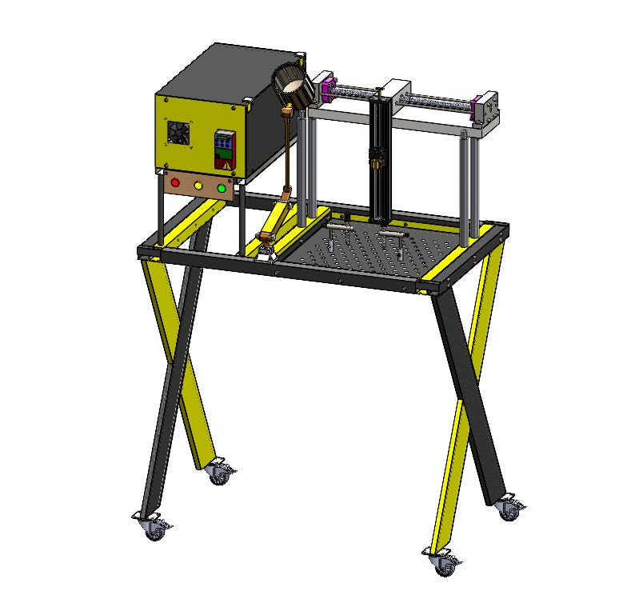

Additive manufacturing
I want to move into it through wire-arc processes, where my welding background carries over. Parameters, heat input and joint quality are already familiar ground.
Mechanical engineer · Cairo, Egypt
Mechanical design, welding automation and industrial piping.
I design and build machines around the welding process. In 2026 I worked in a technical office and on site, turning contracts into BOQs, schedules and tested pipework. I am looking for a mechanical design, manufacturing or R&D role where I keep learning, with additive manufacturing as the field I want to grow into.

Thesis project, 2025
For my M.Sc. I designed and built a CNC welding bench with variable travel speed, aimed at raising productivity in small and medium manufacturers. It is built for hybrid TIG and MIG work.
Motion control and sensor integration run on Arduino. The models show the X-leg bench frame, the screw-driven gantry axes, the Z module, the drive enclosure with its controller and cooling, and the parts laid out before assembly.
Welding bench with X-leg frame, drive enclosure and a carrier over a perforated table, on lockable casters
Simulation
I run static and nonlinear studies in SolidWorks Simulation and read the results against material yield. These are the studies from my own models.
Peak von Mises stress divided by yield strength, from the solver results.
Intermediate shaft of a bevel-helical gear reducer, 200 kW at 1,500 rpm.
Industrial work, 2026
Models from my time in the technical office and on site. Client and project names are removed.
Steel supports and conveyor
Modelling
Parts I modelled to practise mechanisms and to complete assemblies such as the welding bench.
Experience and education
El Watad Constructions, Cairo
Abou Bekr Belkaid University, Tlemcen. Ranked 3rd in class.
EPA CMA (ex Kherbouch Group), Tlemcen
EPE SOREMEP Spa, Tlemcen
Echahid Cheikh Larbi Tebessi University, Tebessa. Second-class honours, ranked 2nd in class.
Toolbox
Direction
Each project started from the one before it. These are the three threads I want to follow.
I want to move into it through wire-arc processes, where my welding background carries over. Parameters, heat input and joint quality are already familiar ground.
I run nonlinear studies as well as static ones, as in the X-leg support above. I want to keep widening the range of problems I can model with confidence.
My bench controls motion and speed. The next layer is sensing, so the process responds to the joint instead of following a fixed path.
PublicationSulimieh, I., Alwaheidi, A., and Embarek, N. (2024). Numerical Study of Natural Convection in a Square Cavity Filled with Water. Proceedings of ICSIS 2024, Konya, Turkey, pp. 377 to 381.
I am open to mechanical design, manufacturing and R&D roles, and to research positions. Send me a message and I will reply.